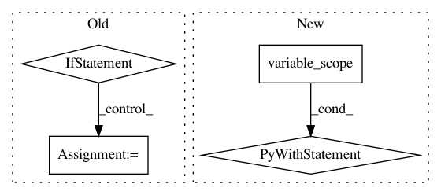

133d8b4c1b22c639359202ba55d828bed7ddff47,texar/modules/decoders/beam_search_decode.py,,beam_search_decode,#Any#Any#Any#Any#Any#Any#Any#Any#Any#Any#Any#,49
Before Change
output_layer=output_layer,
length_penalty_weight=length_penalty_weight)
if "maximum_iterations" in kwargs:
raise ValueError("Use `max_decoding_length` to set the maximum "
"allowed number of decoding steps.")
outputs, final_state, _ = dynamic_decode(
decoder=beam_docoder,
output_time_major=output_time_major,
maximum_iterations=max_decoding_length,
**kwargs)
return outputs, final_state
After Change
if isinstance(decoder_or_cell, RNNDecoderBase):
vs = decoder_or_cell.variable_scope
with tf.variable_scope(vs, reuse=tf.AUTO_REUSE):
return _decode()
else:
return _decode()
In pattern: SUPERPATTERN
Frequency: 3
Non-data size: 4
Instances
Project Name: asyml/texar
Commit Name: 133d8b4c1b22c639359202ba55d828bed7ddff47
Time: 2018-05-03
Author: zhitinghu@gmail.com
File Name: texar/modules/decoders/beam_search_decode.py
Class Name:
Method Name: beam_search_decode
Project Name: asyml/texar
Commit Name: da37438735fd4b845bb0874562bd071865c480bb
Time: 2018-03-17
Author: zhitinghu@gmail.com
File Name: texar/modules/encoders/rnn_encoders.py
Class Name: RNNEncoderBase
Method Name: __init__
Project Name: tensorlayer/tensorlayer
Commit Name: b2e6cccd53bd6c076c32421b8c4d562a96437524
Time: 2018-03-10
Author: dhsig552@163.com
File Name: tensorlayer/layers/normalization.py
Class Name: LayerNormLayer
Method Name: __init__